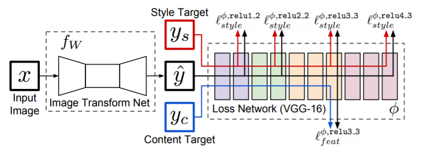
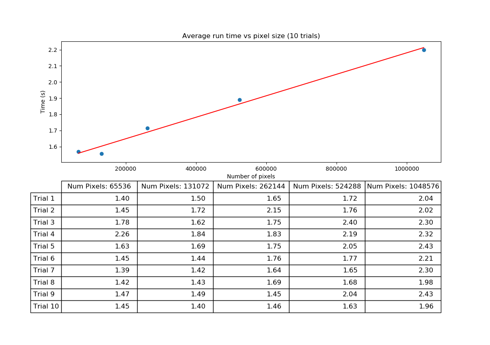

The Computer Visionaries: Midterm Update
Rishab Kaup, Karthik Praturu, Noah Sutter and Austen SchunkFall 2018 CS 4476 Computer Vision: Final Project
Georgia Tech
Abstract
Style transfer is a method of transferring the style of an image, like a painting, to another image. This is useful for creating new types of computer generated artwork, and it can even be used for videos. Our approach focuses on exploring and optimizing the current state-of-the-art algorithms for style transfer, taking pieces of separate algorithms that currently exist, and utilizing the concepts they introduce to make the general algorithm run faster and more efficiently for use with videos on everyday computers. We have found key areas for improvement in the most popular style transfer algorithm currently in use, shown in [1], through our experiments and propose a modified structure for faster performance.Teaser Figure


Introduction
Style transfer algorithms produce very artistic and often seemingly imaginative
outputs, making it a very popular way to filter images and generate abstract
art. Tools like the Deep Dream Generator
use style transfer algorithms to generate visual content for consumer use or
research purposes. Real-time style transfer can be used for augmented reality
applications and videos by applying the transformation frame-by-frame, but this
requires faster methods for determining how to transfer style.
The modern style transfer algorithm, introduced by Johnson et al., works as
shown in the following figure:

Johnson et al. Style Tranfer Pipeline [1]
The algorithm is split up into two parts, an image transformation network (ITN) and a
loss network. The loss network is a pre-trained VGG16 network meant for
image classification, and it defines weighted functions of feature reconstruction
loss and style reconstruction loss. Most modern style transfer implementations
make use of the same loss network. The loss functions generated by the loss network
are used when training the image transformation network (ITN), and training the
ITN introduced in [1] involves fixing a style image and feeding through a large
database of content images. The ITN introduced by Johnson et al. incorporates a
convolutional neural network with multiple convolutional and pooling layers
throughout; however, other modern implementations use different approaches.
For example, the method introduced in [7] has an ITN that matches the mean
and variance of intermediate features, and the ITN in [8] uses a network that
attempts to minimize the difference of centered covariance between the loss
network output and the combined style and content images.
We approached the problem of style transfer by first taking into account what
currently exists, and then modifying and combining the traits present in each
method to try and achieve an algorithm better suited for modern, high-quality and
fast videos. There were multiple methods we considered, including but not limited
to adding an encoder and decoder network to help speed up transfer times for
high resolution images, incorporating the energy of the content image and the
final image to force the content to still mostly be present, and changing the
ITN introduced by Johnson et al. to include information better suited for videos.
By combining the methods that currently exist and modifying the image
transformation network in [1], we hope we can achieve a new, robust way to
handle style transfer.
Approach
We will be splitting our apporach into two parts. The first part will consist of attempting improving frame rates for CPU video style transfer. The second will seek to improve the quality of real-time video style transfer for GPU.
Part 1: CPU Improvements
Currently, when using the method provided in [1] the frame rate is ~0.6fps depending on the size of the image being transformed, which cannot really be considered "real-time" style transfer. We will attempt to improve this time using the following methods.
First, there is the idea of training a more simplistic image transformation network than the one described in [1]. This will be performed based on the idea that a simpler network i.e. one with less parameters will take less computation time. An easy adjustment would be to increase the stride of the convolutions, but this can only be done to a certain limit at which the network vastly decreases in performance. Another option would be to arbitrarily decrease the number of layers, size of filters, or number of filters. While one may get lucky when randomly removing layers, a better idea is to remove model parameters in an informed manner. Removing parameters in this manner is called model compression and while there are many types of model compression, we will use the quantization and pruning technique described in [3].
The second idea is to use an architecture that is entirely different: Referenced in [2] I dont really understand this model, so someone else should talk about our approach to this
############# FINISH ME #############
Part 2: GPU Improvements
Contrary to real-time style transfer on a CPU, real-time style transfer on a GPU is more or less solved. As a result, The goal in this setting will be to reduce a sort of flickering effect that occurs as a result of temporal inconsistencies between frames. An example of this can be seen in the teaser figure in which one can basically identify the change of frame. The "video" comes as a result of applying the transformation network from [1] repeatedly on each frame. The main problem with this is there is no concept of consistency between frames. The can be solved by using adding a temporal loss with the style and content loss. This loss is one that enforces a penalty for changes between output frames. We will be implementing two models that attempt to use this idea of a temporal loss. The first is the model presented in [4] which passes the image at time t and t-1 into an image transformation network consecutively then uses the per pixel MSE(Mean-Squared-Error) of the image at time t and a function(tries to map the image from t-1 to t) of t-1. The model then calculates the style and content loss at time t in the same manner as [1], but now combines that spatial loss with this new temporal loss in order to update the network. The second model which we will implement is the one proposed in [5]. In this model, we use an encoder-decoder network rather than the conventional feed-forward convolutional neural network. The main difference between this network and the one in [4] is that the temporal loss will be computed on the features that are encoded by the encoder rather than on the generated image.
############# FINISH ME #############
Note: Across all proposed models above, there will be the general goal to sacriface small losses in performance by using a smaller model in order to increase fps. Additionally, the models specified in the GPU portion will also be tested for cpu performance but not the other way around.
Current Experiments and Results
For this midterm update, we decided to focus on implementing and testing the current approach detailed in [1]. We trained a neural network from scratch
with this approach on the following images:
############ INSERT STYLE IMAGES HERE ############
After training, which took about #### INSERT TIME HERE ######, the results for two test images are shown below:
############ INSERT CONTENT AND STYLED IMAGES HERE ############
The results for running the neural net on several sized images are also important, and are shown below:

########### INSERT INFORMATION ABOUT WHY THIS IS SLOW AND BAD #############
Future Goals
Coding
############ INSERT GOALS FOR CODING (ENCODER/DECODER, VIDEO TRANSFER) ###############Experimentation
Quantitative Experimentation
The goals that we have set above will be tested in several different ways:For both image and video
- Time trials for training on style images
- Directly compare times for training using the style transfer described in [1] and the style transfer changes we implement from [2] and our own ideas
- Time trials for testing on static content images
- Directly compare times for testing using the style transfer described in [1] and the style transfer changes we implement from [2] and our own ideas
For video only
- Frame rate trials for flickering/smoothness
- Directly compare frame rate from videos created using [1] method, and new method
Qualitative Experimentation
In the future experiments, we will give the users/subjects pictures and videos, with ranging complexities, to have the style transferred from the original image/video to that of a given template. In this context, the complexity of an image can be viewed as "how busy is an image?" For example, a picture of a single fruit would be defined as less complex than a photo of a city street with lots of pedestrians and vehicles. The images we will use to train the transformation network will be from the Microsoft COCO dataset as described in [2]. We will be hand selecting the images used as style images based on whether or not it is visually appealing and of a distinct, recognizable style. Given the largely subjective nature of evaluating the quality of a style transfer, for each image we will ask, in a survey, for users/subjects to rate the style transfer on a scale of 1 to 5 for the following criteria.For both image and video
- How acceptable is the time taken for processing the style transfer
- 5 being the most acceptable and 1 being the least acceptable
- Overall quality of image produced
- 5 being the best quality and 1 being the worst quality
- How related the style of the generated image is with the desired style
- 5 being the generated style completely matches the desired style and 1 being the generated style does not match the desired style at all
- How related the content of the generated image is with the original
- 5 being the content of the generated image is completely related to the content of the original image and 1 being the content of the generated image is not related to the content of the original image
For only video
- Overall continuity of the video i.e. was the video skipping significantly between frames? not maintining a certain style? etc..
- 5 being perfect continuity and 1 being no continuity
Relevant papers and articles:
- Johnson et al. Perceptual Losses for Real-Time Style Transfer and Super-Resolution
- Li et al. Artistic Style Transfer for Video
- Cheng et al. A Survey of Model Compression and Acceleration for Deep Neural Networks
- Huang et al. Real-Time Neural Style Transfer for Videos
- Gao et al. ReCoNet: Real-time Coherent Video StyleTransfer Network
- Weinzaepfel et al. DeepFlow: Large displacement optical flow with deep matching
- Huang et al. Arbitrary Style Transfer in Real-time with Adaptive Instance Normalization
- Li et al. Learning Linear Transformations for Fast Arbitrary Style Transfer